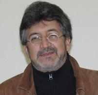

Sesión 1
Ponencia: Introducción al pensamiento ambiental.
Fecha: Sábado 10 de febrero.
Conferencista: Tomás León Sicard.
Tomás León Sicard

Agrólogo, Master en Ciencias Ambientales de la Fundación Universitaria Luxemburguesa de Bélgica (F.U.L.) y Doctor Ingeniero Agrónomo de la Universidad Politécnica de Madrid (España). Se desempeña en las áreas de agricultura – ambiente, agroecología y manejo de suelos. Es docente de dedicación exclusiva en el Instituto de estudios Ambientales (IDEA) de la Universidad Nacional de Colombia, sede Bogotá.